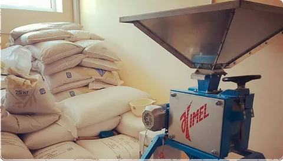
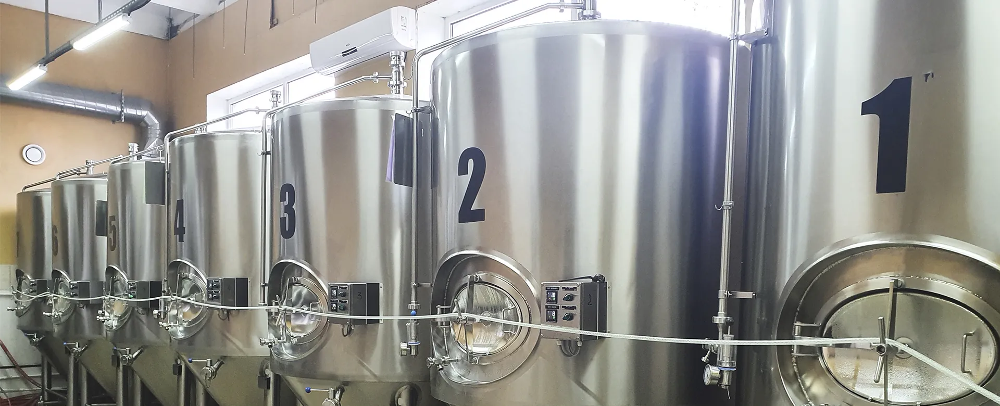
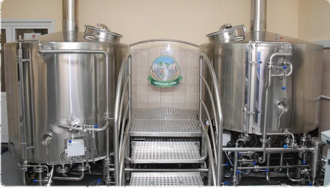
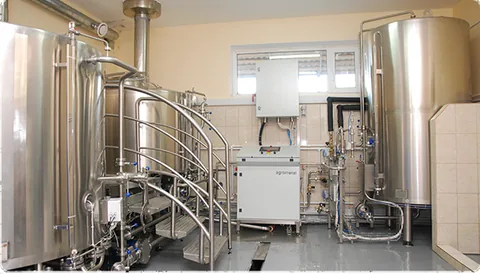
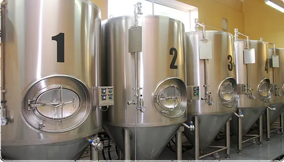
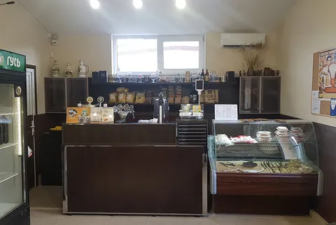
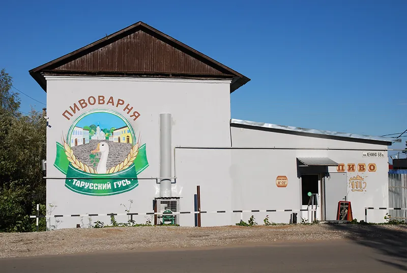

Дробление солода
Плющим зерно так, чтобы раздавить ядро и сохранить шелуху — она станет фильтром для затора.


Пивоварня полного цикла · Таруса
Пять лагеров по чешским, советским и дореволюционным рецептам. Варим отварочным способом и даём пиву время: от 35 до 50 дней дображивания.
Сварено в Тарусе на Оке, без складов и посредников
ЛистайтеО пивоварне
Мы работаем в Тарусе, на берегу Оки, и варим пиво полного цикла: сами дробим солод, затираем, кипятим с хмелем, сбраживаем и разливаем. Кега едет в магазин прямо из танка — без складов и посредников.

Наша продукция
Все сорта — низового брожения. Разница — в плотности, солоде, хмеле и терпении.

Светло-золотистый лагер с мягким солодовым вкусом и умеренной хмелевой горчинкой.

Плотнее и горче: золотистый цвет, выраженный солод и хмель. Рецептура 1979 года.

Хлебный аромат, солодовый вкус и тонкая горчинка. Пшеничный солод даёт лёгкую мутность.

Рецепт средневековой пражской пивоварни: ржаной хлеб, поджаренный солод, мягкая горчинка.

Янтарный лагер плотностью 15% по дореволюционному рецепту Трёхгорного завода.
С чего начать
Технолог нальёт пиво прямо из танка и расскажет, чем сорта отличаются друг от друга.
Производство
Пиво нельзя ускорить — можно только сделать правильно. Вот как выглядит путь от мешка солода до кеги в Тарусе.
Технология подробноПлющим зерно так, чтобы раздавить ядро и сохранить шелуху — она станет фильтром для затора.

Несколько температурных пауз и отварка части затора. Больше труда — больше вкуса.

Осветляем сусло, стерилизуем его и забираем из хмеля горечь и аромат.

До 7 дней первичного брожения и от 35 до 50 дней созревания при низких температурах.

Прямо из танка в кеги. Без складов, перевалок и долгой дороги до бокала.

Экскурсии
Технолог проведёт по производству, покажет оборудование и сырьё, расскажет о технологии и нальёт пиво прямо из танка. Дегустация — сорта, созревшие к моменту визита.
Группы — по предварительной записи. Стоимость и время уточняйте по телефону: +7 (4842) 400-714, +7 (953) 316-55-07.


Где попробовать
При пивоварне работает магазин: здесь весь ассортимент, который есть сейчас, и свежая вяленая рыба из Таганрога и Астрахани. К пиву — закуски, к закускам — пиво.
Галерея
Металл, солод и терпение — так выглядит пивоварня в рабочий день.
Контакты
Мы на улице Ленина, 68Б — здесь же производство и фирменный магазин. Позвоните, если хотите записаться на экскурсию или обсудить поставки.